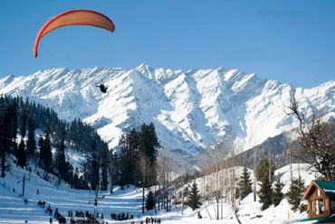

North India Packages
Embraced in the heart of the mighty Himalayan range, Himachal Pradesh is a paradise embellished with various natural riches. The mountain state is the ideal location to relax and spend holidays with friends, families, and loved ones. From the snow capped peaks, lush valleys, orchards of fruits, pine forests, bubbling rivers, ancient holy sites, natural springs, thrilling adventures, the Land of Himalayas is simply exquisite. The breathtaking panorama is a sight one never forgets. The magic of the Himachal simply leaves you captivated.
Himachal Pradesh Tour Packages takes you to the wonderful heart of the Himalayas. From hill stations like Shimla, Kufri, Kullu, Manali, Khajjiar, Dalhousie, Dharamshala, etc., the options are numerous. Savor the pleasant weather. There are adventures like trekking, mountaineering, camping, skiing, river rafting, paragliding, zorbing, and other adrenaline gushing sports. The scenic resorts and hotels make pleasant memories. Escape to the Himalayan kingdom now!